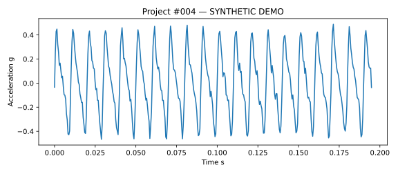

Extração de atributos de frequência sonora e amplitude harmônica em testes de bancada de motores.
Dados reais e sintéticos, separados. A análise principal usa 40 registros reais de vibração do banco de rolamentos da Case Western Reserve University. O estudo original, mais abaixo, usa DADOS 100% SINTÉTICOS e serve de teste do pipeline.
Diagnóstico de rolamentos com vibração real
Um defeito localizado num rolamento produz um impacto a cada passagem de uma esfera, numa taxa fixada pela geometria. Cada impacto faz a estrutura ressoar por alguns milissegundos. A informação do defeito não está no espectro comum, onde a ressonância domina, mas no envelope dessas ressonâncias. Aqui a análise de envelope roda sobre 40 registros reais do banco de ensaios da Case Western Reserve University, sem usar os rótulos para ajustar nada.
Registros de pista interna diagnosticados
—
Registros de pista externa diagnosticados
—
Registros de esfera diagnosticados
—
Falso alarme em janelas saudáveis
—
Carregando a análise…
O que o envelope mostra
Rolamento saudável, registro 97, 0 hp: ruído sem estrutura.Pista externa com defeito de 0,007″, registro 130: impactos a cada 9,3 ms (BPFO = 107 Hz).
Saudável: nenhuma linha nas frequências de defeito.Pista interna, registro 105: pente em BPFI e harmônicos.
Esfera, registro 118: nada acima do fundo em 2·BSF.Pista externa, registro 130: BPFO e três harmônicos.
Espectros do quadrado do envelope após pré-branqueamento cepstral, primeira janela de 1 s de cada registro, em dB acima da mediana do próprio espectro. Linhas tracejadas: BPFO (azul), BPFI (vermelho) e 2·BSF (âmbar), calculadas com a rotação medida no registro.
Curtograma por STFT: a curtose espectral é alta onde impactos dominam o ruído. A banda de maior curtose é a escolhida para demodular no segundo caminho de processamento.
Resultado nos 40 registros
Cada célula é um registro: classe e tamanho do defeito nas linhas, carga do motor nas colunas. Verde: diagnóstico correto pela maioria das janelas. O número é a proeminência média da frequência de defeito da classe real (para os saudáveis, a maior das três).
Janelas de 1 s, pré-branqueamento cepstral
Janelas de 1 s, banda da curtose espectral
Pista interna em todos os 12 registros, pista externa em 8 de 12, esfera em nenhum. Os quatro registros de pista externa com 0,014″ não mostram BPFO em nenhuma carga, e os defeitos de esfera não deixam pente no envelope medido. Smith e Randall chegaram a conclusão parecida no estudo de referência desses dados: os defeitos de esfera são a categoria menos diagnosticável. Um classificador que acerte tudo nesses dados está reconhecendo outra coisa que não a física do defeito.
Verificação com verdade conhecida
Para saber o que a cadeia de processamento consegue ver, o mesmo diagnóstico roda em sinais simulados: impactos na frequência de defeito com 1 % de variação aleatória do período, cada um excitando uma ressonância de 3,5 kHz, mais harmônicos da rotação e ruído. O limiar vem de simulações sem defeito, com 1 % de falso alarme.
Só ruído branco e harmônicos fracos da rotação.Com um engrenamento forte (27 dentes, 6 harmônicos) mascarando o espectro.
Linha cheia: pista externa; tracejada: pista interna, cujo sinal é modulado pela passagem na zona de carga e por isso exige SNR maior. Sem componentes discretos, a banda escolhida pela curtose é a melhor e o pré-branqueamento perde um pouco, porque também achata a ressonância. Com engrenamento, a banda da curtose deixa de ajudar e só o pré-branqueamento detecta antes de 12 dB. Os dois caminhos são complementares; a escolha certa depende do que mais há na máquina.
Método e limites
Cinemática
Para n esferas de diâmetro d num diâmetro primitivo D, ângulo de contato φ e rotação fr da pista interna:
Um defeito na esfera bate nas duas pistas, então a taxa de impactos é 2·BSF. Os valores calculados da geometria coincidem com os publicados pelo CWRU até a terceira casa decimal.
Processamento
Janelas de 1 s (resolução de 1 Hz, cerca de 30 rotações). Caminho 1: pré-branqueamento cepstral, y = IFFT(X/|X|), que zera a magnitude e mantém a fase. Caminho 2: filtro passa-faixa na banda de maior curtose espectral (Antoni, 2006), com largura de 750 a 1.500 Hz para preservar os harmônicos de BPFI. Nos dois, espectro do quadrado do envelope pela transformada de Hilbert.
Indicador e decisão
Para cada tipo de defeito, a média em dB dos três primeiros harmônicos sobre a mediana local, procurando o pico em ±1,5 % para acomodar o escorregamento das esferas. A janela recebe o tipo de maior indicador se ele passar o limiar τ, o percentil 99 do indicador nas janelas saudáveis. Nas janelas saudáveis avaliadas, τ vem das outras três cargas.
Limites
Um único rolamento por tipo e tamanho de defeito, todos usinados por eletroerosão: é um ensaio de laboratório, não um desgaste natural.
Só existe um rolamento saudável no conjunto de dados; o falso alarme medido vale para ele.
O registro 99 (saudável, 2 hp) guarda também as variáveis do registro 98; usa-se a variável com o número do próprio registro. Os registros 98 e 99 não têm rotação gravada, e vale a nominal da carga.
Os dados são do sensor do lado do acionamento, amostrados a 12 kHz. Ressonâncias acima de 6 kHz não aparecem.
Reproduzir
python scripts/fetch_cwru.py # baixa e confere o SHA-256 dos 40 registros
python scripts/build_bearing_data.py
Abaixo fica a primeira versão deste projeto, com sinais sintéticos e espectro simples. Ela continua como teste do pipeline de esquema e gráficos; os números dela não descrevem nenhuma máquina.
Visualização calculada

Métricas reproduzíveis
Base de dados
synthetic / reproducible, not operational evidence
Projeto
4
samples
2048
Sample rate hz
2,05
Nyquist hz
1,02
Rms g
0,261
Firing hz
100,0
Dominant peak hz
100,0
Dominant amplitude g
0,321
interpretation
Actual Hann-window FFT of synthetic engine vibration; not a calibrated test-bench measurement.
Reprodutibilidade
As tabelas são um resumo estático das métricas calculadas. Não afirmamos conectividade com SAP, Power BI ou operação produtiva.